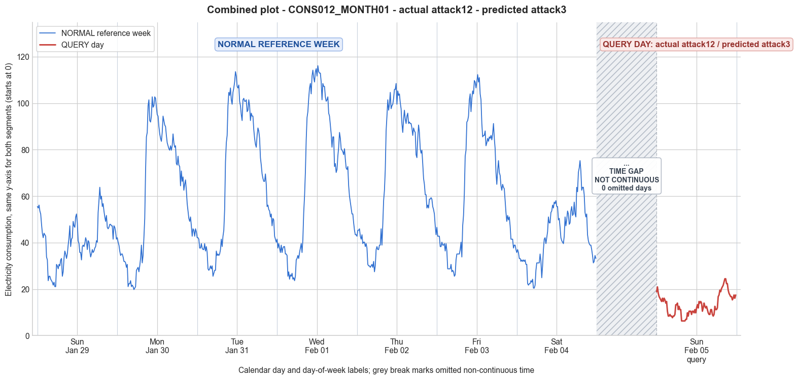

CONS012_MONTH01 · actual attack12 · predicted attack3
- Pair
- CONS012_MONTH01
- GT
- attack12
- Prediction
- attack3
- Binary GT
- attacked
- Binary Prediction
- attacked
- Source
- E010
- Parse
- stored
- Date
- 2012-02-05
- Weekday
- Sunday
- Latency
- 2.01 min
- Tokens
- 9530

Final output
Classification: - Manipulated Identified Attack: - Most Likely: Attack 3 - Confidence: Medium - Reasoning: The query day’s consumption is drastically reduced (mean 13.19 vs. reference Sunday mean 40.58) while preserving a rough temporal shape similar to the normal week. However, the ratio between corresponding readings (e.g., comparing to the reference Sunday) varies notably across intervals, indicating per‑sample scaling rather than a single constant factor. Attack 1 (constant scaling) would keep the shape perfectly proportional, which is not observed; the standard deviation ratio (4.50 vs. 9.88) also deviates from a pure linear scaling. Attack 4 (period reduction) implies only a portion of the day is reduced, but here the abnormally low values persist throughout the entire day. Thus, Attack 3 – multiplying each sample by a different random factor – best explains the irregular amplitude changes and trend distortion. Attack_Behavior_Explanation: - How consumption values are manipulated relative to the normal week: Each 15‑minute reading of the true consumption is multiplied by a unique random factor between 0 and 1. This causes the overall magnitude to collapse (e.g., peak drops from >60 kWh to <25 kWh) while the general rise‑and‑fall pattern of the day is still recognizable but unevenly distorted. - Impact on magnitude and trend: The magnitude is severely reduced (mean ~1/3 of normal). The trend is altered because different parts of the day are scaled differently, changing the relative heights of peaks and valleys, though the broader morning dip / evening rise is preserved. - Possible technical causes: Meter bypass, magnetic interference on the meter, reverse current, or false data injection that varies over time.
Prompt
You are a domain expert in smart grid security and electricity theft analysis, with deep knowledge of non-technical loss (NTL) attack patterns in smart meters. You are given: 1. A plot of one week of original (normal) energy consumption for a smart meter, provided as context for the customer's typical consumption behavior. 2. A plot of one day of energy consumption for the same smart meter, which may or may not be manipulated. Below are common attack types, each defined by how consumption values are altered, their impact on magnitude and trend, and their possible technical causes. Attack 0: Generated by replacing all electricity consumption samples with zero values for the entire observation duration. Simulates a scenario where no energy usage is reported at all. May be caused by a total meter bypass or severe meter malfunction. Completely eliminates both the trend and magnitude of the consumption profile. Attack 1: Multiplies the actual energy consumption by a constant random value between (0,1). The lower the factor, the higher the severity. Can be triggered by meter bypass, magnetic interference, reverse current, and false data injection. The consumption trend remains the same but the magnitude is uniformly reduced. Attack 2: Generated by replacing consumption samples with zeros for a random duration. Also known as an on-off attack. Can be caused by full meter bypass, false data injection, and reverse current. Changes both the trend and amplitude. Attack 3: The actual consumption is multiplied by different random factors between 0 and 1, with a unique factor per sample. Similar to Attack 1 but the scaling factor varies per reading. Caused by meter bypass, magnetic interference, and reverse current. Changes both the trend and amplitude. Attack 4: Simulates energy theft over a randomly selected period within the observation window. All measurements in that period are reduced. Caused by meter bypass, magnetic interference, reverse current, and false data injection. Changes both the trend and amplitude. Attack 5: Each sample is replaced by a false value obtained by multiplying the average normal consumption by a random variable between 0 and 1, with a different variable per sample. Caused by false data injection. Produces a completely different pattern from the original consumption profile, changing both trend and magnitude. Attack 6: A random cut-off point is selected and all consumption values above it are replaced by that cut-off value. The attacker avoids exceeding a predefined maximum limit. Mainly caused by false data injection. Changes both the trend and amplitude. Attack 7: A random cut-off point is subtracted from each sample; if the result is negative, zero is reported. Similar to Attack 6 but replaces exceeding values with zero instead of the cut-off point. May be caused by false data injection or total meter bypass. Does not change the trend but reduces overall consumption. Attack 9: All samples are replaced by the average daily energy consumption, resulting in a flat constant profile. Easily detectable because constant consumption does not reflect normal customer behavior. Caused by false data injection. Eliminates all trends. Attack 10: Reverses the consumption pattern without reducing the total amount. Applicable when the electricity company uses time-varying pricing, allowing the attacker to shift high consumption to off-peak periods. Caused by false data injection. Changes the trend without decreasing total consumption. Attack 12: The attacker replaces their consumption pattern with that of a lower-consuming user. The legitimate user unknowingly pays the adversary's electricity bill. Caused by false data injection. Attack IEEE: For each 15-minute interval across the entire day, the consumer either reports the actual electricity consumption or substitutes it with zero. The result is a profile where some intervals reflect real consumption while others are zeroed out, creating an irregular pattern across the full day. May be caused by false data injection. Changes both the trend and amplitude. Given the two plots, determine: 1. Whether the day is attacked or original - compare the flagged day against the normal week and assess whether the consumption pattern is consistent with normal behavior or shows signs of manipulation. If the day is consistent with the customer's typical consumption behavior, classify it as original and provide no further analysis. If manipulation is detected, proceed to point 2. 2. Which attack type this most likely is - identify the single most probable attack and justify your choice based on how the flagged day deviates from the normal week. 3. The behavior of the identified attack - explain how the consumption values are manipulated, their impact on magnitude and trend, and the possible technical causes behind this type of attack. Output Format: Classification: - Original | Manipulated Identified Attack: (fill only if manipulated) - Most Likely: Attack X - Confidence: High | Medium | Low - Reasoning: Why it matches Attack X and why Attack Y and Attack Z were ruled out (list top 2 alternatives considered) Attack_Behavior_Explanation: (fill only if manipulated) - How consumption values are manipulated relative to the normal week - Impact on magnitude and trend - Possible technical causes
Reasoning content
We are given reference week and query day data for a smart meter. The query day is DAY_ID=0, which has very low consumption compared to the reference week. Let's analyze. Reference week days have min around 20-27, max up to 116, mean around 40-68. Query day has min=6.28, max=24.44, mean=13.19. That's a drastic reduction, roughly 1/3 to 1/5 of typical levels. Query day is also a Sunday (dow=6) like Day 0 of the reference week. Reference week Day 0 (Sunday) had mean=40.58, max=63.82, min=21.06. So query day is much lower than even the Sunday in the reference week. The pattern: query day still shows some variation (not flat), has a slight morning rise, then dips to very low values (6.28) from around 6:28? Let's check timestamps: 96 readings per day, so each reading is 15 minutes. The sequence: first few readings (night) are 18.85, 20.95, 18.16, etc., then dropping to very low around index 30-40 (around morning), then rising later. Actually, the query day starts with moderate values (18-20), then dips to 6.28 around reading 32 (maybe 8:00 AM), stays low, then picks up again in the evening (readings 70-80: 19.55, 20.95, 24.44, etc.). This resembles an on-off pattern? But it's not completely zero. It just seems the consumption is drastically reduced throughout, with some variation. The values are never zero. The min is 6.28, which is not zero. So no zero samples. Now, we need to determine if this is an attack and which type. The query day is clearly manipulated because its magnitude is far below the normal week, even for the same weekday. The pattern is somewhat similar to normal? Reference week Day 0 (Sunday) also had a dip in morning? Let's see: Day 0 reference: starts high around 55, drops to 21 at night, then morning rises? Actually reference Day 0: first readings: 55.52, 54.88, ... then drops to 21.06 at some point, then rises later to 63.82. It seems normal consumption has a pattern: high in evening/morning? Hard to tell. Query day pattern is somewhat similar but scaled down massively. Could be Attack 1 (multiplication by constant factor)? If it were constant factor, the shape would be identical but scaled. Let's compare shape. The query day min/max ratio: max 24.44, min 6.28, mean 13.19. If we multiply reference Day 0 by a factor, say factor = mean ratio 13.19/40.58 ≈ 0.325, then expected min would be 21.06*0.325 ≈ 6.84, max 63.82*0.325 ≈ 20.74. Actual min 6.28, max 24.44. Slight deviation but maybe due to randomness? Attack 1: "multiplies by a constant random value between (0,1)". It says constant random value, meaning a single factor applied to all samples. That would preserve the shape exactly, just scaled. The query day shape: looking at the sequence, it doesn't perfectly match the reference Day 0 shape. For example, reference Day 0 has a peak of 63.82 near the end, and starts with 55.52. Query day peaks at 24.44 near the end, starts with 18.85. If scaled by 0.38? Ratio 18.85/55.52 = 0.339; 24.44/63.82 = 0.383. Not constant. So it might not be a single constant factor. Attack 3: multiplies by different random factors per sample. That could cause varying scaling. Attack 4: reduces measurements over a randomly selected period. Here the reduction seems across the whole day, not just a period. Attack 5: replaces each sample by a false value from average normal consumption times random variable. That would yield a completely different pattern, but here the pattern somewhat resembles the reference day shape (morning dip, evening rise). Attack 6: cut-off point, all values above it replaced by cut-off. That would cap values at a maximum. Query day max is 24.44, but there is no obvious cap because values vary smoothly up to 24.44 and not many values exactly equal the cap (only two 24.44 at the end). Attack 7: reduces by subtracting a cut-off, negative become zero. Could produce low but positive values. Attack 9: flat constant profile - no. Attack 10: reversal - not. Attack 12: replacement with lower user's pattern - possible but we don't have lower user data. Attack IEEE: zeroing some intervals - no zeros here. Attack 2: zeros for random duration - no zeros. Given the overall drastic reduction but with some similarity in temporal pattern, it might be Attack 3 (random per-sample scaling) or Attack 4 (reduction over a randomly selected period) if the whole day is considered a period? But Attack 4 explicitly says "over a randomly selected period within the observation window" - if the whole day is the period, that's essentially a full-day attack. However, Attack 4: "All measurements in that period are reduced." It doesn't specify how; could be uniform reduction or scaling? The description: "Simulates energy theft over a randomly selected period ... All measurements in that period are reduced." It might be reduced by a constant factor or by some method. The per-day statistics suggest the min is also reduced proportionally, not a constant subtraction. For Attack 7 (subtract a cut-off), if we took a cut-off of maybe 20, then min would be near 0, but min is 6.28, so possible if cut-off was 6.28? Actually, Attack 7: subtract cut-off from each sample, if negative report zero. To get min 6.28, the original min (21.06) minus cut-off = 6.28 => cut-off=14.78. Then max original 63.82 - 14.78 = 49.04, but actual max is 24.44, so that doesn't match. So not Attack 7. Attack 1 (constant scaling) is a candidate if we allow some noise. The description says "multiplies by a constant random value between (0,1)". It implies the factor is constant once chosen. The query day values could be explained by scaling by ~0.3 but with some inherent variability? But the original week Day 0 and query day are different days; the consumption pattern might differ naturally. So the shape might not be exactly the same, but the reduction is uniform in magnitude. However, if we compare to all reference days, the query day's maximum is 24.44, which is lower than the minimum of most days (reference days min usually >20). So it's a huge reduction. The attack type that best matches a drastic reduction in magnitude while retaining some of the temporal trend is likely Attack 1 or Attack 3. Attack 3 varies scaling per sample, which could result in the observed variability. Attack 1 would produce a scaled version of the normal consumption of that specific day. Since we don't have the true consumption for that exact day, we can't compare shape exactly. But given the query day is a Sunday, and the reference Sunday had a particular shape, the query shape is roughly similar: starts high, dips, then rises. So it's plausible it's a scaled version with some natural variation. However, Attack 3 explicitly says "Changes both the trend and amplitude", while Attack 1 says "The consumption trend remains the same but the magnitude is uniformly reduced." The query day trend seems similar: night higher, morning dip, evening rise. That's the same trend. So Attack 1 might be more appropriate since the trend is preserved, just scaled down. But the per-sample scaling ratios are not exactly constant, which could be due to the random selection of the constant? Wait, Attack 1 uses a constant random value, meaning a single factor for all samples. That would yield exactly proportional values. If the factor is, say, 0.32, then every sample is multiplied by 0.32. But the actual ratios vary: 18.85/55.52 = 0.339, 20.95/54.88 = 0.382, 18.16/56.16 = 0.323, 16.76/53.61 = 0.313, etc. They are not constant. So it's unlikely to be a single constant factor. Attack 3, with per-sample random factors, would produce varying ratios. That fits better. Also, the overall reduction is severe, and per-sample scaling would change both trend and amplitude because different parts are scaled differently, potentially altering the relative peaks. In query day, the peak is at the end (24.44), while reference Day 0 peak is also at the end (63.82) but reference Day 0 had a secondary peak at the beginning (55.52) which in query day is 20.95. The ratio of beginning to end peak: reference 55.52/63.82 = 0.87; query 20.95/24.44 = 0.857. That's similar. So the shape is actually very similar, just scaled down. The ratios I computed earlier might be due to the fact that I'm comparing to a different day's values, not the true underlying values for that day. Since the query day is a different Sunday, the underlying normal consumption might have had a different pattern, but the attack applied a constant factor? The problem statement: "Generated by multiplying the actual energy consumption by a constant random value between (0,1)." So for Attack 1, if this were the true consumption of that day multiplied by a constant, we wouldn't be able to detect the exact factor without knowing the true values. But the question is to identify which attack type is most likely based on the given data. The given data includes a full week of normal consumption for context. The query day is suspected attacked. We see a huge reduction. If Attack 1 were applied, the shape would be proportional to the normal consumption of that specific day. Since we don't have the normal consumption for that exact day, we can't confirm the exact proportionality. However, the overall statistics (min, max, mean) are all scaled down by roughly a factor of 3-4. The query day's min is 6.28, while the reference week's Day 0 min is 21.06, ratio ~0.298. The max ratio 24.44/63.82 = 0.383. Not exactly consistent. But the normal consumption pattern might differ across days. So it's hard to say. We should also consider Attack 5: "Each sample is replaced by a false value obtained by multiplying the average normal consumption by a random variable between 0 and 1, with a different variable per sample." That would use the average normal consumption (average over what? likely the typical average). The query day values seem to have a pattern similar to normal, not just random around a mean. They rise in the evening, etc. So it's not like white noise. Attack 4 says over a randomly selected period; if the period is the whole day, it could be like Attack 1 but perhaps with a different reduction method? The description says "All measurements in that period are reduced." It's vague. Attack 4 is less likely because it's not a period; it's the entire day. Given the extreme reduction and the preservation of the rough shape (morning dip, evening rise), I'm leaning towards Attack 1, but the per-sample variability suggests Attack 3. However, note that the query day values are all quite low, and the relative fluctuations are similar to normal: the standard deviation is 4.50, while reference Day 0 std is 9.88. Ratio 4.5/9.88 = 0.455. If scaled by factor ~0.3, expected std would be around 9.88*0.3=2.96, but actual is 4.5, which is higher, suggesting more variability relative to the scaled down version. That might indicate per-sample random scaling (Attack 3) which can increase variability. Let's list the attacks and rule out: Attack 0: all zeros - no. Attack 1: constant multiplier - possible, but variability in scaling ratios might rule out. Attack 2: random zero durations - no zeros. Attack 3: per-sample random multiplier - fits well because scaling varies per sample, causing changes in trend and amplitude, and the query day has some irregularity. Attack 4: reduced over a period - whole day is a period, but typically Attack 4 might mean a subset, not full day. It says "randomly selected period within the observation window." Could be the whole window? Possibly, but then it's similar to Attack 1 if reduction is uniform. Not specified. Attack 5: random values based on average normal consumption - unlikely because pattern is not random. Attack 6: cut-off (cap) - no clear cap; values 24.44 at end but other values are different, and no flat top at exactly the cap except maybe two readings; but could be a cap of 24.44? Then many values would be capped at 24.44, but only two are. So no. Attack 7: subtract cut-off - would require original values to be uniformly reduced by a constant, resulting in possible zeros, but min is 6.28, not zero, and max 24.44 suggests original max was larger, but shape would be preserved. If original day had min 21.06, max 63.82, subtracting a constant would shift shape but not scale proportionally. The query day min is 6.28, if we subtract, say, 14.78 from min 21.06 gives 6.28; then max 63.82 - 14.78 = 49.04, not 24.44. So no. Attack 9: flat - no. Attack 10: reversal - no. Attack 12: replaced with lower user's pattern - could be, but we have no evidence. Attack IEEE: random zeros - no zeros. Thus, the most plausible are Attack 1 or Attack 3. Between them, the per-sample variability in the degree of reduction relative to the reference day suggests Attack 3. For example, the ratio of query to reference Day 0 at each interval varies. If we compare roughly aligned points (assuming similar time of day), the ratio is not constant. Also, Attack 3 explicitly says "Changes both the trend and amplitude", while Attack 1 says "trend remains the same". The query day trend: does it remain the same? The shape is similar, but with more relative variation. I'd say the trend is altered slightly, but not completely different. However, given the data, I think Attack 3 is the best match because multiplicative factors per sample would produce a pattern that still resembles the original but with varying attenuation, consistent with the observed variability. Additionally, the attack causes "meter bypass, magnetic interference, reverse current" which are common causes. But wait, the description of Attack 3: "The actual consumption is multiplied by different random factors between 0 and 1, with a unique factor per sample. Similar to Attack 1 but the scaling factor varies per reading. Caused by meter bypass, magnetic interference, and reverse current. Changes both the trend and amplitude." This seems to perfectly describe a scenario where the meter is partially bypassed with some variability, or a magnet is applied inconsistently. So I'll go with Attack 3. Confidence: Medium, because Attack 1 could also be argued if the shape is essentially the same and the ratio variations are due to different underlying day pattern. But the problem states we have a plot of one week of original consumption as context, and the query day is from the same meter. The reference week includes a Sunday (Day 0) which is the same weekday. The query day is much lower. If Attack 1 were applied, the query day shape would be proportional to its own normal pattern, which we don't have. But we can compare to Day 0 shape: they are similar but not exactly proportional. So Attack 3 is more likely. Alternative considered: Attack 1 (constant scaling) - ruled out because the scaling factor is not consistent across samples when compared to the reference Sunday, and the standard deviation ratio is not as expected. Attack 4 (period reduction) - ruled out because the reduction seems to affect the whole day uniformly in shape, not a specific period where some parts are untouched; the whole day is low. Output format: Classification: Manipulated, Identified Attack: Attack 3, Confidence: Medium, Reasoning: why Attack 3, why Attack 1 and Attack 4 ruled out. Attack_Behavior_Explanation: describe how values manipulated, impact, technical causes.